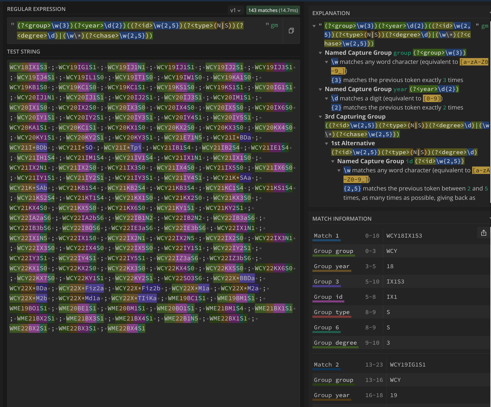

Metody i narzędzia generowania kodu wykonywalnego
ppor. mgr inż. Norbert Waszkowiak
nr tel.: 261 839 060
e-mail: norbert.waszkowiak@wat.edu.pl
pomieszczenie: bud. 100 pok. 254B
konsultacje online i stacjanarnie: po wcześniejszym umówieniu
e-mail: norbert.waszkowiak@wat.edu.pl
pomieszczenie: bud. 100 pok. 254B
konsultacje online i stacjanarnie: po wcześniejszym umówieniu
Zasady oceniania
- Każde przedstawione zadanie podlega ocenie 2-5;
- W przypadku stwierdzenia niesamodzielności w wykonaniu pracy zostanie ona wliczona do średniej jako 0;
- Ostateczna ocena z laboratoriów będzie wynikała ze średniej z wszystkich zadań laboratoryjnych;
- Obecność na wszystkich zajęciach jest obowiązkową. Zaległości można usunąć uczestnicząc w zajęciach z inną grupą, po wcześniejszym poinformowaniu prowadzącego. W przypadku gdy zajęcia z pozostałymi grupami już się odbyły, można odrobić zajęcia na konsultacjach. Dopuszczalna liczba nieobecności to 1 spotkanie.
- Zajęcia będą realizowane z wykorzystaniem systemu kontroli wersjii - git. Za termin realizacji uznaję się godzinę ostatniego commit-u. Czas na wykonanie zadnia to dwa tygodnie liczone od 23:59 dnia, w którym zostały zrealizowane zajęcia. Jeżeli termin oddania zadania przypadnie po rozpoczęciu sesji egzaminacyjnej. Wtedy za termin oddania zadania przyjmuje się 24h przed rozpoczęciem sesji egzaminacyjnej.
- Po otrzymaniu oceny końcowej od prowadzącego należy wrzucić swoje rozwiązanie na grupę na MS Teams w postaci czterech paczek zip, nazwanych zgodnie z przykładem: MNG_ZAD1_WASZKOWIAK_NORBERT_68604.zip. Jest to warunek wpisania oceny do systemu USOS.
-
Ocenie podlegać będą:
- Poprawność wykonania;
- Zakres funkcjonalności rozwiązania;
- Samodzielność;
- Zastosowanie dobrych praktyk programistycznych;
- Wykorzystanie systemu kontroli wersjii.
Wyrażenia regularne
A komu to potrzebne? A dlaczego?
Wyrażenia regularne - (ang. regular expression, w skrócie regex lub regexp) - wzorzec opisujący łańcuch symboli. Teoria wyrażeń regularnych jest związana z teorią języków regularnych. Wyrażenia regularne mogą określać zbiór pasujących łańcuchów, jak również wyszczególniać istotne części łańcucha.Pokaz z objaśnieniem
Przykład z grupami dziekańskimi
Dane:
WCY18IX1S3 ; WCY19IG1S1 ; WCY19IJ1N1 ; WCY19IJ1S1 ; WCY19IJ2S1 ; WCY19IJ3S1 ; WCY19IJ4S1 ; WCY19IL1S0 ; WCY19IT1S0 ; WCY19IW1S0 ; WCY19KA1S0 ; WCY19KB1S0 ; WCY19KC1S0 ; WCY19KC1S1 ; WCY19KS1S0 ; WCY19KS1S1 ; WCY20IG1S1 ; WCY20IJ1N1 ; WCY20IJ1S1 ; WCY20IJ2S1 ; WCY20IJ3S1 ; WCY20IM1S1 ; WCY20IX1S0 ; WCY20IX2S0 ; WCY20IX3S0 ; WCY20IX4S0 ; WCY20IX5S0 ; WCY20IX6S0 ; WCY20IY1S1 ; WCY20IY2S1 ; WCY20IY3S1 ; WCY20IY4S1 ; WCY20IY5S1 ; WCY20KA1S1 ; WCY20KC1S1 ; WCY20KX1S0 ; WCY20KX2S0 ; WCY20KX3S0 ; WCY20KX4S0 ; WCY20KY1S1 ; WCY20KY2S1 ; WCY20KY3S1 ; WCY21E71N5 ; WCY21I*BDa ; WCY21I*BDb ; WCY21I*SO ; WCY21I*Tpi ; WCY21IB1S4 ; WCY21IB2S4 ; WCY21IE1S4 ; WCY21IH1S4 ; WCY21IM1S4 ; WCY21IV1S4 ; WCY21IX1N1 ; WCY21IX1S0 ; WCY21IX2N1 ; WCY21IX2S0 ; WCY21IX3S0 ; WCY21IX4S0 ; WCY21IX5S0 ; WCY21IX6S0 ; WCY21IY1S1 ; WCY21IY2S1 ; WCY21IY3S1 ; WCY21IY4S1 ; WCY21K*SAa ; WCY21K*SAb ; WCY21KB1S4 ; WCY21KB2S4 ; WCY21KB3S4 ; WCY21KC1S4 ; WCY21KS1S4 ; WCY21KS2S4 ; WCY21KT1S4 ; WCY21KX1S0 ; WCY21KX2S0 ; WCY21KX3S0 ; WCY21KX4S0 ; WCY21KX5S0 ; WCY21KX6S0 ; WCY21KY1S1 ; WCY21KY2S1 ; WCY22IA2aS6 ; WCY22IA2bS6 ; WCY22IB1N2 ; WCY22IB2N2 ; WCY22IB3aS6 ; WCY22IB3bS6 ; WCY22IBOS6 ; WCY22IE3aS6 ; WCY22IE3bS6 ; WCY22IX1N1 ; WCY22IX1N5 ; WCY22IX1S0 ; WCY22IX2N1 ; WCY22IX2N5 ; WCY22IX2S0 ; WCY22IX3N1 ; WCY22IX3S0 ; WCY22IX4S0 ; WCY22IX5S0 ; WCY22IY1S1 ; WCY22IY2S1 ; WCY22IY3S1 ; WCY22IY4S1 ; WCY22IY5S1 ; WCY22IZ3aS6 ; WCY22IZ3bS6 ; WCY22KX1S0 ; WCY22KX2S0 ; WCY22KX3S0 ; WCY22KX4S0 ; WCY22KX5S0 ; WCY22KX6S0 ; WCY22KX7S0 ; WCY22KY1S1 ; WCY22KY2S1 ; WCY22SO3S6 ; WCY22X*BBDa ; WCY22X*BDa ; WCY22X*Fiz2a ; WCY22X*Fiz2b ; WCY22X*M1a ; WCY22X*M2a ; WCY22X*M2b ; WCY22X*Md1a ; WCY22X*TIiKa ; WME19BC1S1 ; WME19BM1S1 ; WME19BO1S1 ; WME20BE1S1 ; WME20BM1S1 ; WME20BO1S1 ; WME21BM1S4 ; WME21BX1S1 ; WME21BX2S1 ; WME21BX3S1 ; WME21BX4S1 ; WME22B1N5 ; WME22BX1S1 ; WME22BX2S1 ; WME22BX3S1 ; WME22BX4S1Pokaz z objaśnieniem

Zadanie cz.1 👨‍💻
Zaimplementuj klasę umożliwiająca na podstawie maila z domeny WAT pozyskanie informacji o właścicielu takich jak:- imię
- nazwisko
- czy jest studentem
- czy jest mężczyzną
Klasa ma realizować testy jednostkowe, przedstawione w następnej sekcji. Dopisz dodatkowe 10 przypadków testowych. Do końca trwania laboratoriów przesłać za pomocą formularza link do utworzonego publicznego repozytorium na github.com
Zadanie cz.2 👨‍💻
ANTLR4
Co to jest i do czego służy?
ANTLR (ang. ANother Tool for Language Recognition) to narzędzie służące do tworzenia kompilatorów oraz translatorów z opisu gramatyki zawierającego akcje w języku Java, C++, C# lub Python. Domyślnie ANTLR generuje lekser i parser w Javie, a plik z gramatyką ma rozszerzenie .g4. Dostępne są również implementacje narzędzia w innych językach. Drzewo syntaktyczne dla dowolnej gramatyki można wygenerować również za pomocą narzędzia online ANTLR LAB. Dokumentacja ANTLR4Gramatyka kalkulatora
grammar Calculator;
expression: integralExpression ((PLUS | MINUS) integralExpression)*;
integralExpression: MINUS INT | INT;
INT: [0-9]+ ;
PLUS: '+' ;
MINUS: '-' ;
INTEGRAL: 'cal';
WS : [ \t\r\n]+ -> skip ;
Przydatne komendy
#pobranie antlr jako jar
wget https://www.antlr.org/download/antlr-4.11.1-complete.jar
#generowanie klas lexera i parsera
java -jar ./antlr-4.11.1-complete.jar Calculator.g4
#kompilowanie do bytecodu klas Calculator*
javac -cp ./antlr-4.11.1-complete.jar Calculator*.java
#podgląd drzewa syntaktycznego
java -cp .:antlr-4.11.1-complete.jar org.antlr.v4.gui.TestRig \
Calculator expression -tree -gui example.txt
Fragment kodu
public static void main(String[] args) throws Exception {
CharStream charStreams = CharStreams.fromFileName("./example.txt");
Integer result = calc(charStreams);
System.out.println("Result = " + result);
}
public static Integer calc(String expression) {
return calc(CharStreams.fromString(expression));
}
public static Integer calc(CharStream charStream) {
CalculatorLexer lexer = new CalculatorLexer(charStream);
CommonTokenStream tokens = new CommonTokenStream(lexer);
CalculatorParser parser = new CalculatorParser(tokens);
ParseTree tree = parser.expression();
ParseTreeWalker walker = new ParseTreeWalker();
CalculatorMainListener mainListener = new CalculatorMainListener();
walker.walk(mainListener, tree);
return mainListener.getResult();
}
Zadanie 2
Utworzyć publiczne repozytorium na github.com.Zmieścić link w formularzu.
Opracować gramatyke kalkulatora, wygenerować Lexer i Parser, a następnie zaimplementować jego działanie rozszerzając wybraną klase np. *BaseListener lub *BaseVisitor.
Wymagana funkcjonalność to: dodawanie, odejmowanie, mnożenie, dzielnie, potęgowanie, pierwiastkowanie zgodnie z kolejnością wykonywania działań.